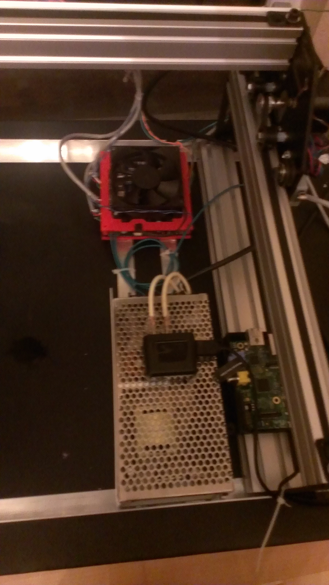

Images
Version 1

This is an image of the first version of the machine. The monitor is showing the output of the Raspberry pi that is controlling the machine
The RPi connects the TinyG controller that runs my machine and the Replicator together using python scripts
Version 1 is part engineered part McGyvered together, the unit is very heavy because the plywood base does that I found in the garage is pretty thick
the power supply is underrated also so the motors are a little slow sometimes

Despite its rough appearance it still works pretty well. Movement is accurate enough to hard code a demo where the RPi pauses a print, has my machine "insert"
an imaginary object (this is because the electromagnet wasn't working yet) and resume the print after.
Version 2

Version 2 has some great upgrades. First I extended the x axis so that my machine would have an area outside the Replicator it could pick up objects.
I also lost the plywood base in exchange for an aluminium frame.
The electronics got an upgrade as well, the power supply was upgraded to a Led fixture power supply so the motors are running much better.
I also added a voltage amplifier to the electromagnet so it can run of the logical output on the TinyG that is supposed to control the spindle.
Limit switches were added so that movement will be more accurate between different runs.
Version 2 larger, lighter and has a greater range of motion. I don't plan on making any hardware changes for a while so check the software section for updates.